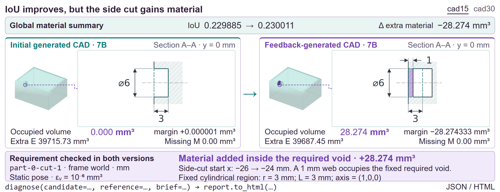
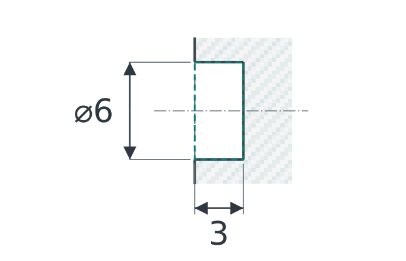
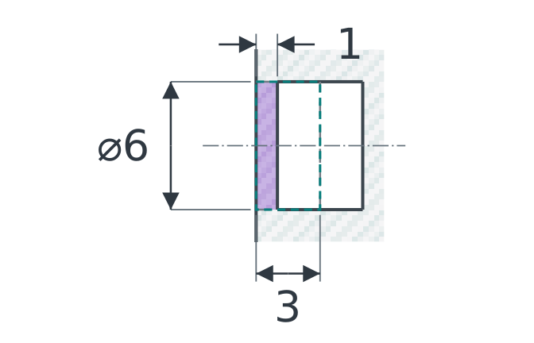
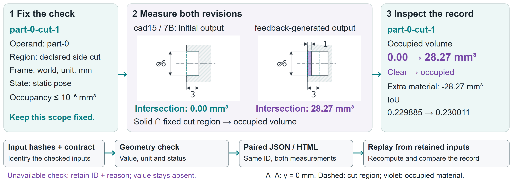
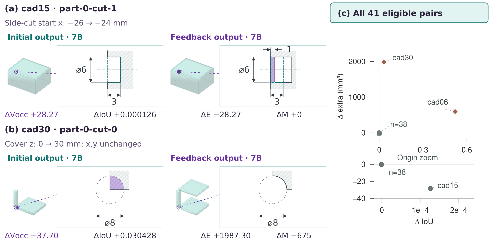
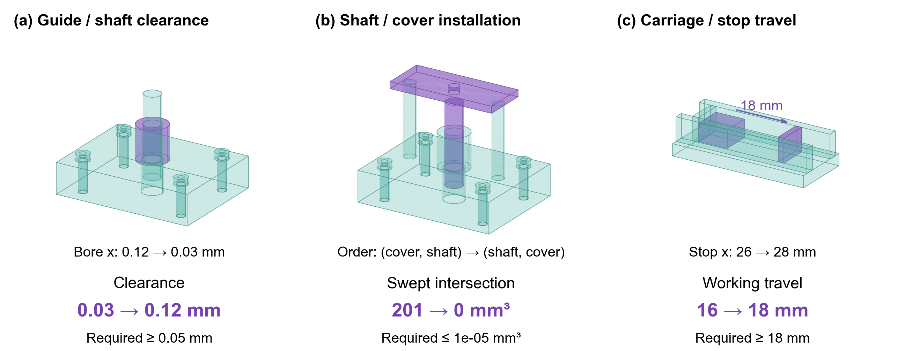

“Don't just measure IoU. Diagnose the requirement.”
Existing generative CAD benchmarks evaluate global overlap and volume similarity. Hard-CAD bridges declared engineering contracts and B-Rep kernel measurements to expose local regressions that global IoU hides.

Figure 1: The Hard-CAD diagnostic workflow. An explicit requirement brief (YAML) binds declared keep-out voids to real B-Rep CAD geometry, comparing revision states and quantifying localized differences beyond coarse global overlap metrics.
Existing CAD benchmarks evaluate geometric similarity, requirement satisfaction, and edit preservation using coarse voxel/mesh overlap or point-cloud Chamfer distance. However, in precision mechanical engineering, a generated model can preserve 99% of its occupied material while placing a mounting bore on the wrong axis, blocking a vital fluid passage, or fusing moving parts together.
Hard-CAD introduces a contract-based diagnostic record: it pairs the same declared requirement across revisions, links local changes to global material differences, retains unavailable checks, and supports executable replay. By formalizing explicit requirements into lightweight YAML contracts and utilizing the deterministic OpenCASCADE B-Rep kernel (via FreeCAD), Hard-CAD decouples requirement-level engineering diagnostics from brittle black-box model scoring.
Explicit YAML declarations of keep-out voids, bounding boxes, coordinate frames, units, and strict numerical tolerances (10⁻⁶ mm³).
Traces individual requirement transitions (PASS → FAIL or FAIL → PASS) across model revisions to pinpoint regressions instantly.
Fully reproducible, kernel-grounded measurements independent of private CAD licenses, LLM tokens, or non-deterministic GPU engines.
In our benchmark cohort of 30 modeling briefs and 41 revision pairs, standard global metrics consistently failed to reflect localized physical correctness.


Left: Initial model with side-cut open. Right: Post-revision model where more material was trimmed overall, but the side-cut was erroneously filled!
| Requirement | Initial | Revision |
|---|---|---|
| part-0-cut-0 | FAIL 38059 mm³ | FAIL 38003 mm³ |
| part-0-cut-1 | PASS (0.00) | FAIL (28.27 mm³) ✗ |
Diagnostic Verdict: Regression detected! A previously passing side-cut was blocked during the edit.
From human design briefs and engineering contracts to deterministic B-Rep geometry validation and paired revision diffs.

Figure 2: Architectural flow of Hard-CAD. Modeling briefs are ingested as formal schema contracts. STEP/BREP outputs are evaluated across iterations, generating paired diff tables, individual HTML/JSON diagnosis artifacts, and reproducible provenance logs.
Engineers specify required functional regions (cylindrical holes, planar slots, boundary bounding boxes), reference frames, explicit units (mm), and tight volumetric tolerances (1.0e-6 mm³).
FreeCAD's OpenCASCADE engine computes exact Boolean cuts and intersections directly on native B-Rep boundary curves and analytical surfaces, avoiding mesh approximation errors.
A revision difference record pairs each requirement across candidate models $M_1$ and $M_2$, computing categorical state transitions (PASS ↔ FAIL) alongside global missing/extra volume deltas.
Evaluated across 30 design briefs, 41 eligible revision pairs, and 84 cut requirement instances.

Distribution of IoU changes vs. localized volumetric modifications across 41 revision pairs. Several cases show IoU gains accompanied by local requirement regressions.

Tool-using CAD agents attempting iterative repair. While agents successfully clear specific designated cutouts, feedback comparisons show that repair loops often introduce unforeseen collateral geometry changes.
Run the verifiable benchmark examples or diagnose your own STEP files in seconds.
# 1. Clone repository and install validator git clone https://github.com/Hard-CAD/hard-cad.git cd hard-cad pip install .[yaml] # 2. Run the recorded paper benchmark demo hardcad demo --output paper-demo --cad-python python # 3. View the generated diagnostic report open paper-demo/index.html
from hardcad import diagnose # Diagnose candidate STEP geometry against reference & contract brief report = diagnose( candidate="candidate_v2.step", reference="reference.step", brief="brief.yaml", cad_python="python" ) # Export interactive HTML diagnosis report report.to_html("diagnosis.html") print(report.summary())
schema_version: hardcad.contract.v1 unit: mm frame: world requirements: - id: part-0-cut-0 kind: keep_out region: kind: box origin: [-23, -18, 2] size: [46, 36, 23] tolerance_mm3: 1.0e-06 - id: part-0-cut-1 kind: keep_out region: kind: cylinder origin: [-25, 0, 12] radius: 3 height: 3 axis: [1, 0, 0] tolerance_mm3: 1.0e-06
@article{hardcad2026,
title = {Hard-CAD: Contract-Based Diagnostics for Generated CAD Geometry},
journal = {Computers \& Graphics},
year = {2026},
note = {Under Review}
}